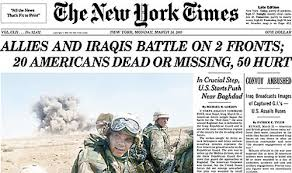

The New York Times - 紐約時報

英文官網 ： The New York Times
中文官網 ： 紐約時報中文網
英文維基 ： The_New_York_Times
中文維基 ： 紐約時報- 維基百科，自由的百科全書 - Wikipedia
歷年大事記 ：
1871年 揭露坦慕尼協會操控選舉醜聞，並使其最終於1934年徹底解散
以下內容摘錄自镀金时代腐败案例：政商勾结的巨鳄坦慕尼协会 - ShareAmerica | Connect with America
纽约时报得到了特威德和他的同伙大肆侵吞公款的证据，回绝坦慕尼协会提出的封口费，纽约时报公布了这些材料，引起了民众的公愤。而且当时供职于著名的哈泼斯周刊的记者与漫画家纳斯特（Thomas Nast），也以一系列漫画揭露坦慕尼协会的罪恶。最终特威德被判处12年徒刑，尽管他一度潜逃到西班牙，仍然被人认出，引渡回纽约之后于1878年死于监狱。
1960年-1964年 纽约时报诉沙利文案（New York Times Co. v. Sullivan， 376 U.S. 254 (1964)），經過長達四年的較量，最終於1964年3月9日，联邦最高法院以9比0作出判决裁定《纽约时报》公司胜诉
1971年 由丹尼爾·艾爾斯伯格泄漏，並由時報爆出五角大樓文件
2012年 再度獨家爆出关于时任中华人民共和国国务院总理温家宝家族财富事件的驚天秘聞，並於2013年获得年度普利策新闻奖的国际报道奖
2016年 先由《南德意志報》(Süddeutsche Zeitung) 的兩位記者巴斯蒂安·奧伯梅爾(Bastian Obermayer)和雷德里克·奧伯邁爾(Frederik Obermaier)介入，並隨後分享給總部位於華盛頓的非營利組織國際調查記者同盟(International Consortium of Investigative Journalists，簡稱ICIJ)，經過一年的整理，於2016年4月3日在官方網站上向全世界公開了有關巴拿馬文件的初步分析結果. 紐約時報並未參與其中, 而是獨立地進行梳理報導
2017年 國際調查記者同盟(International Consortium of Investigative Journalists，簡稱ICIJ)，再度攜公開巴拿馬文件的原班人馬於2017年11月5日披露全球多國政要精英涉嫌海外避稅洗錢的1340万份的天堂文件, 此次《紐約時報》有參與其中